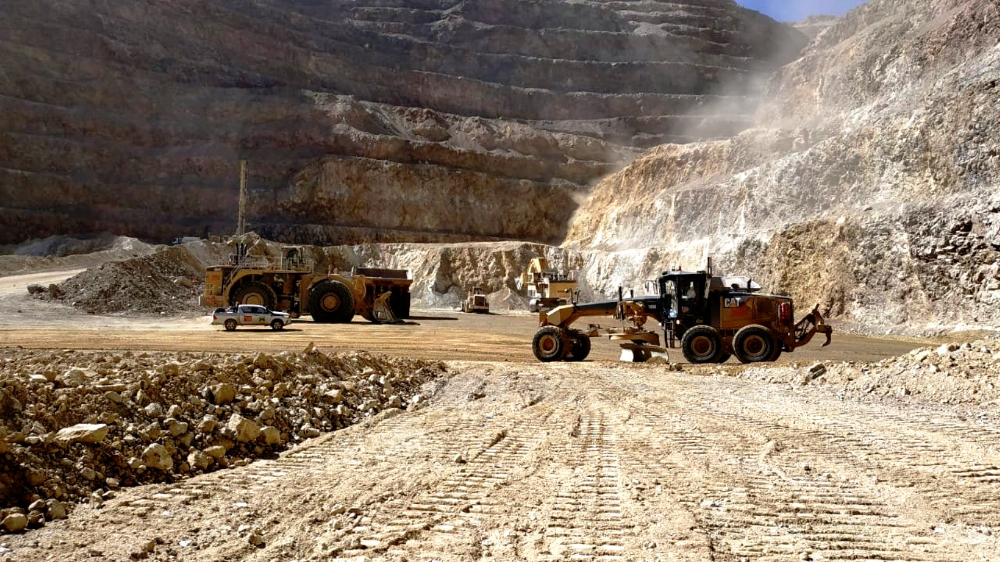
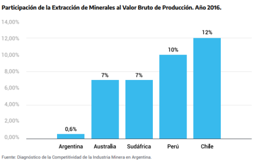
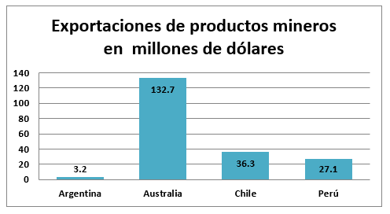
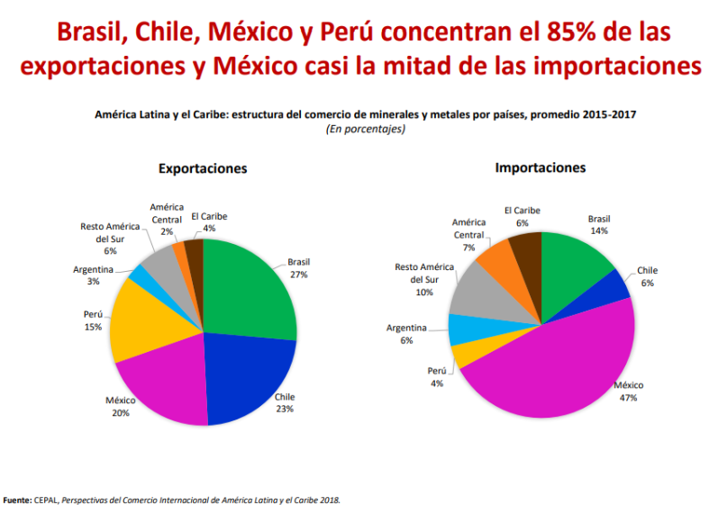
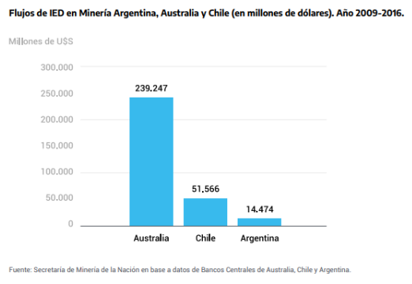
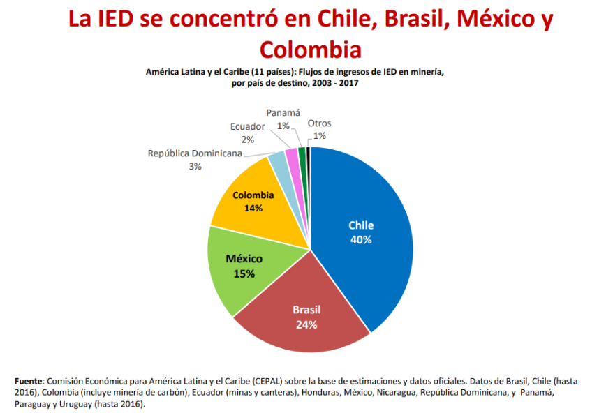

La Argentina minera, ¿Es competitiva?
Por: Cecilia S. Arancibia Terzi | 27 Sep 2020
A medida que transcurre una de las mayores crisis sanitarias que enfrenta el mundo con la propagación del COVID -19 y las consecuencias económicas devastadoras que está teniendo para cada país, proponemos analizar un sector clave para la economía de Argentina, considerando la situación previa a la pandemia para construir planes a futuro.
Argentina se encuentra en el 6to puesto en el ranking mundial de recursos mineros, con un potencial de alrededor de 750.000km2, de lo cual resta por explorar más del 75% . Si bien el país cuenta con las condiciones para desarrollar al máximo este potencial, el hecho de que sea beneficiado con grandes niveles de recursos naturales no garantiza su riqueza.
Para analizar este punto, nos basaremos en la literatura de ciencia política que aborda la "Maldición de los Recursos Naturales". Si bien no hay nada definido en relación a ese efecto, ya que se ve reflejado en algunos casos, tiende a ser más notorio en países donde el petróleo o la minería son la única oportunidad.
Un claro ejemplo de ello es el caso de Mongolia, donde en las elecciones del 2008, al vislumbrar la posibilidad de crecimiento con la minería, sus 2 partidos políticos más importantes prometieron en campaña asignar a cada ciudadano la riqueza que se generaría; UDS 700 uno, y USD 1000 el otro. Promesa imposible de cumplir, ya que habría significado el 60 % del PBI de todo el país.
El otro ejemplo es la República del Congo. En este caso la compañía nacional de petróleo tiene el poder de decidir qué empresas pueden comprar su producción. En 2005, ellos escogieron una compañía que resultó estar dirigida por el jefe de la empresa petrolera nacional. El petróleo fue vendido a esa firma fantasma a precios muy reducidos, y después, ésta, traspasó ese petróleo vendiéndolo al precio del mercado a otra compañía. El margen de ganancia fue compartido por un grupo de la élite política que esencialmente recibió una asignación de ingresos públicos a través de este esquema fraudulento.
Por otro lado, nos encontramos con países como Australia, Canadá y Noruega, que si bien se han visto favorecidos por una gran cantidad de recursos naturales, han alcanzado niveles de crecimiento alto y sostenido. En general, los países industrializados han sabido implementar políticas fiscales contracíclicas, lo que implica evitar gastar los recursos en periodos de auge de precio y viceversa.
La posibilidad de implementar políticas contracíclicas dependerá de la calidad de las instituciones y se evidencia con la alta correlación que existe entre ambas variables. Chile es un país que en poco tiempo logró hacer más eficientes y transparentes sus instituciones, lo que le permitió pasar de políticas procíclicas a políticas contracíclicas. Lo anterior, a su vez, ayudó al país a enfrentar de mejor manera la crisis financiera mundial de 2008 y 2009, y la que afectó posteriormente a algunos países de la Unión Europea.
La seguridad jurídica y la fortaleza de las instituciones es uno de los desafíos más grandes que presenta Argentina, ya que se encuentra en la posición 149 de 180 países en el “Índice de Libertad Económica” del año 2020 que realizó Heritage.org, justo por debajo de Etiopía, Zambia y Guinea-Bissau. Comparando otros países con explotación metalífera de la zona, encontramos a Chile en la posición 15, Perú en la 51, o si comparamos con Australia, la que se encuentra en la posición 4, Argentina está lejos de ser un destino tentador para inversionistas del mundo.
Si medimos la explotación de la actividad minera y su contribución en el PBI de 4 países (ver gráfico 1), notaremos que Argentina está muy por debajo de países mineros por excelencia.
Además, si cotejamos los niveles de exportación de la actividad minera de Argentina al año 2019, cuyo monto fue de tres mil doscientos millones de dólares (3,2 MM), con países como Australia, que en dicho año exportó ciento treinta y dos mil setecientos millones de dólares (132,7MM), o Chile treinta y seis mil trescientos millones de dólares (36,3MM) y Perú veintisiete mil cien millones de dólares (27,1MM), nos damos cuenta que Argentina se encuentra muy lejos de esos valores. (Ver gráfico 2)
Según estudios de la Comisión Económica para América Latina y el Caribe (CEPAL), si se compara Argentina con Latinoamérica y el Caribe, nos encontramos con que el país abarca solo un 3% de las exportaciones de la región. (ver gráfico 3).
El potencial que tiene Argentina es grande, pero para lograr un desarrollo de la minería a nivel internacional es necesario que el país tenga seguridad jurídica, estabilidad y previsibilidad de políticas públicas, ya que se tratan de inversiones de riesgo y a largo plazo.
La inversión extranjera directa en Argentina, en el periodo 2007-2016, fue de 16.171 millones de dólares, y el 30% de esos flujos derivó de la construcción de los proyectos Pascua-Lama y Potasio Río Colorado. Si comparamos en el plano internacional los flujos de inversión extranjera en el período 2009-2016, nos encontraremos con que Argentina representa un 28% de los flujos de Chile, y solo un 6% de los de Australia (ver gráfico 4).
En ese mismo sentido, si comparamos los flujos de inversión extranjera en Latinoamérica y el Caribe durante el periodo 2003-2017, notaremos que Argentina no figura en el gráfico por los bajos niveles de inversión minera. (ver gráfico 5).
Unos de los aspectos que colocan a Argentina en una posición poco competitiva son la carga impositiva, costos operativos, la dinámica del tipo de cambio y la inflación. Analizando algunos de estos factores, vemos que en el caso del Impuesto a las Ganancias en Argentina representa más del 50% del total de los impuestos pagados y la tasa aplicable supera entre un 15% y 30% a las tasas de países como Chile, Perú y Australia. En el mismo sentido, el IVA de Argentina (21%), es también superior a las tasas de Chile (19%), Perú (18%) y Australia (10%).
Respecto de las regalías mineras, es importante indicar que en Argentina las mismas se cobran independientemente de la rentabilidad de la operación (esquema regresivo), mientras que en la mayoría de los países las regalías presentan esquemas progresivos, que a lo largo de la vida de una operación redundan en mayores beneficios para el fisco, sencillamente porque cuando las operadoras incrementan sus ingresos la recaudación se incrementa.
Otro de los factores es la inflación, que tan solo en el año 2019 fue de un 53,8% interanual. Esto afecta no sólo a consumidores y usuarios, sino a toda la cadena de producción, costos de producción, mano de obra, afectando a la economía en su conjunto. La inflación de Chile en el mismo año fue del 3% , de Perú fue del 1,9% a noviembre de 2019, y de Australia fue del 1,6% .
Estos datos dejan en evidencia la situación en la que se encuentra el país, quedando muy lejos de poder competir con otros Estados en el mercado mundial. Los recursos naturales son moldeados por el contexto político, y mientras Argentina continúe con el agravamiento de la decadencia por un débil liderazgo político, con altos niveles de corrupción, sin ideas ni planes a futuro, es prácticamente nula la probabilidad de que capitales extranjeros decidan invertir a largo plazo en el país, descartando posibles proyectos de explotación minera.
Notas al pie
- [1] Ministerio de Desarrollo Productivo de Argentina, “Hacia la construcción de una visión compartida sobre la minería en Argentina”, año 2020, pág. 4
- [2] Sector Extractivo: sostenibilidad y desarrollo en América Latina y el Caribe, Banco Interamericano del Desarrollo, año 2019.
- [3] Sector Extractivo: sostenibilidad y desarrollo en América Latina y el Caribe, Banco Interamericano del Desarrollo, año 2019.
- [4] Sector Extractivo: sostenibilidad y desarrollo en América Latina y el Caribe, Banco Interamericano del Desarrollo, año 2019.
- [5] HUGO ALTOMONTE, RICARDO J. SÁNCHEZ, “Hacia una nueva gobernanza de los recursos naturales en América Latina y el Caribe”, Comisión Económica para América Latina y el Caribe (CEPAL), Santiago de Chile, mayo de 2016, pág. 42
- [6] HUGO ALTOMONTE, RICARDO J. SÁNCHEZ, “Hacia una nueva gobernanza de los recursos naturales en América Latina y el Caribe”, Comisión Económica para América Latina y el Caribe (CEPAL), Santiago de Chile, mayo de 2016, pág. 44
- [7] HUGO ALTOMONTE, RICARDO J. SÁNCHEZ, “Hacia una nueva gobernanza de los recursos naturales en América Latina y el Caribe”, Comisión Económica para América Latina y el Caribe (CEPAL), Santiago de Chile, mayo de 2016, pág. 45
- [8] https://www.heritage.org/index/ranking
- [9] Ministerio de Desarrollo Productivo de Argentina, “Hacia la construcción de una visión compartida sobre la minería en Argentina”, año 2020, pág. 7
- [10] Ministerio de Desarrollo Productivo de Argentina, “Hacia la construcción de una visión compartida sobre la minería en Argentina”, año 2020, pág. 11
- [11] Ministerio de Desarrollo Productivo de Argentina, “Hacia la construcción de una visión compartida sobre la minería en Argentina”, año 2020, pág. 13
- [12] Ministerio de Desarrollo Productivo de Argentina, “Hacia la construcción de una visión compartida sobre la minería en Argentina”, año 2020, pág. 13
- [13] Ministerio de Desarrollo Productivo de Argentina, “Hacia la construcción de una visión compartida sobre la minería en Argentina”, año 2020, pág. 14
- [14] https://www.cepal.org/sites/default/files/presentation/files/181116_extendidafinalconferencia_a_los_ministros_mineria_lima.pdf
- [15] Ministerio de Desarrollo Productivo de Argentina, “Hacia la construcción de una visión compartida sobre la minería en Argentina”, año 2020, pág. 21
- [16] Ministerio de Desarrollo Productivo de Argentina, “Hacia la construcción de una visión compartida sobre la minería en Argentina”, año 2020, pág. 21
- [17] Ministerio de Desarrollo Productivo de Argentina, “Hacia la construcción de una visión compartida sobre la minería en Argentina”, año 2020, pág. 21
- [18] https://www.indec.gob.ar/uploads/informesdeprensa/ipc_01_20578B3E8357.pdf
- [19] https://www.inflation.eu/es/tasas-de-inflacion/chile/inflacion-historica/ipc-inflacion-chile-2019.aspx
- [20] https://www.bcrp.gob.pe/publicaciones/reporte-de-inflacion.html
- [21] https://datos.bancomundial.org/indicator/FP.CPI.TOTL.ZG